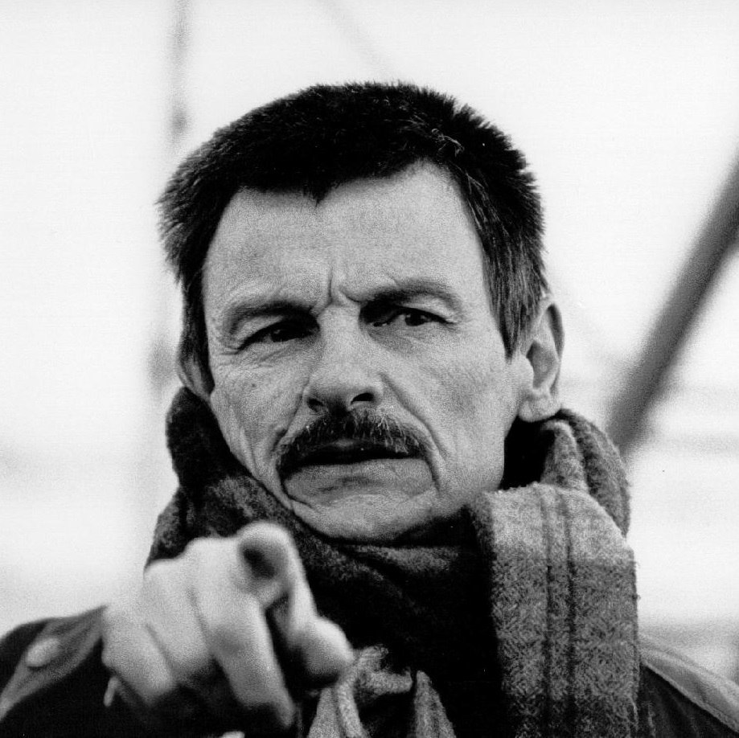

Главная
История
Фильмы
Актёры
Режиссёры
Лучшие отечественные режиссёры
Эльдар Александрович Рязанов
Самара
1927-2015
Леонид Иович Гайдай
Свободный
1923-1993
Игорь Фёдорович Масленников
Нижний Новгород
1931
Сергей Фёдорович Бондарчук
Белозёрка, Украина
1920-1994
Владимир Валентинович Меньшов
Санкт-Петербург
1939

Андрей Арсеньевич Тарковский
Завражье
1932-1986
Александр Артурович Роу
Юрьевец
1906-1973
Станислав Иосифович Ростоцкий
Рыбинск
1922-2001
Георгий Николаевич Данелия
Тбилиси, Грузия
1930
Марк Анатольевич Захаров
Москва
1933